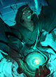

Ringkasan
Perubahan
5 item berubah dari 3 screenshot: 4 ↑ buff, 1 ↓ nerf
Status di data
7 diterapkan server · tercatat, 4 teks
"diterapkan server" = angka baru belum ada di file game (dikirim server). "tercatat" = sudah ada di server_patch.json.
Penyesuaian Commander
| Item | Arah | Perubahan | Angka | Status |
|---|---|---|---|---|
| Lukas | ↑ buff | Kami menyadari bahwa Lukas terlalu mendominasi di early game, tetapi performanya kurang optimal di late game | teks | |
| Lukas | ↑ buff | Untuk mengatasi hal tersebut, kami meningkatkan perolehan Gold-nya dan sedikit mengurangi Hybrid ATK Makhluk Suci Bintang 2 | teks | |
| Lukas | ↑ buff | Sacred Gift: Saat Hero memasuki altar, kamu juga mendapatkan Gold sebesar kelipatan acak dari biaya Gold Hero tersebut (2X >> 3X hingga 3X >> 4X) | teks | |
| Lukas | ↑ buff | Hybrid ATK Makhluk Suci Bintang 2 | 165 → 145 (-12%) | diterapkan server · tercatat di server_patch.json |
 Dyrroth Dyrroth | ↑ buff | Abyssal Favor: Dyrroth mendapatkan | 3 → 4 (+33%) | diterapkan server · tercatat di server_patch.json |
| Dyrroth | ↑ buff | Setiap selesai melahap | 2 → 1 (-50%) | diterapkan server · tercatat di server_patch.json |
 Lunox Lunox | ↓ nerf | Power of Chaos - Jumlah Hero dengan Blessing | 3 → 2 (-33%) | diterapkan server · tercatat di server_patch.json |
| Lunox | ↓ nerf | Power of Order - Perolehan Gold | 6 → 4 (-33%) | diterapkan server · tercatat di server_patch.json |
Penyesuaian Hero
| Item | Arah | Perubahan | Angka | Status |
|---|---|---|---|---|
 Yin Yin | ↑ buff | Hybrid ATK Dasar pada Bintang 2/3 | 250/370 → 275/410 (+11%) | diterapkan server · tercatat di server_patch.json |
Penyesuaian Go Go Card
| Item | Arah | Perubahan | Angka | Status |
|---|---|---|---|---|
 Forbidden Power | ↑ buff | Mendapatkan 30% Peningkatan DMG | teks | |
| Forbidden Power | ↑ buff | Mendapatkan | 25% → 30% (+20%) | diterapkan server · tercatat di server_patch.json |
Dampak ke sinergi
 Bruiser Yin ↑ buff
Bruiser Yin ↑ buff Dragon Altar Yin ↑ buff
Dragon Altar Yin ↑ buff
Screenshot
.png)
.png)
.png)